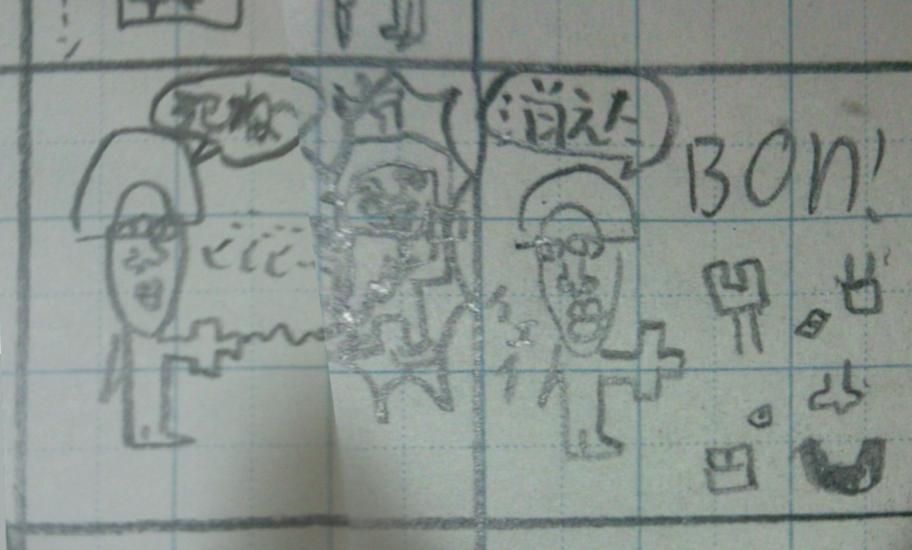

菊阿学
菊阿学（キクアガク）は、舎史および郭史に起こった物事を整理し理解する学問。 主に阿学と菊学から成りその総称として使われることが多いが、厳密には舎学と 郭学を包含する巨大な学界である。
概要
「菊阿学」は菊学と阿学の総称であり、別々に成立した二つの学問を統合したものである。「菊阿学」は英語で Avirysanthelogy といい、菊学 Chrysanthelogy と 阿学 Avilogy が語源である。 その定義は期によって異なるが、楼後期では菊子や倫子の言動や事件およびそれに対する周皇・周阿の行動を整理・研究し、後世に語り継ごうとする学問と解釈される。舎期から続く歴史の長い学問であり、その範疇は史学のみならず心理学や生物学・社会学など広域に渡る。[詳しくは 歴史 項目を参照]
歴史

修復されたミー･ハタケ (2012?)
偆学と東金子文化菊阿学の成立には東金子文化が大きく寄与した。東金子文化は、害悪を傚子化し昇華することで恒常的な謔性を得る文化のことで、東舎の教育体系や舎圏の子質などにより形成されたものと考えられている。東金子文化が形成されるとまず偆学や知学が成立したが、菊阿学はこれらの研究対象を変えただけと捉えることもでき、菊阿学の源流は偆学や知学にあるとされている。偆学では投屑や傚子化、替歌の研究、知学では反知委員会の設立などが行われた。阿学でも替歌研究が受け継がれ反阿運動が展開されたことからも、偆学や知学は菊阿学の礎となっていたことが理解できる。

阿学の初期に作られたとされるくまさんマン (2014?)
阿学の台頭と発展
菊阿学のうち初めに台頭したのは阿学で、舎6期の退阿時に始まったとされる。はじめは倫子のことを深く知ろうという好奇心からなるものだったが、次第に学問化していき卒舎から入郭頃に最も栄えた。当初は倫子事件の学問的魅力が評価されたため阿事学が中心に研究されたが、これが終ると究阿学や掘鼻学といった倫子本人に関心が動き、ついには膨大な阿学データを後世に保存する必要が叫ばれた。
菊学の成立と護藝庁
一方で、東郭では菊学が成立し、阿学者は菊学の研究に移行した。菊学は阿学よりも盛んに研究され、巨大な学問体系を築いた。男児足回部を中心に菊子の保護機関として護藝庁が設立されたが、菊学の中心機関としての役割も担い、菊学は空想菊学などの高度な学問を含む学問系に発展した。
菊阿学への統合と学会機関の成立
卒郭後、菊阿学会が発足し、菊学と阿学を統合して菊阿学としより高度な研究を可能にした。学会は菊阿学を細分して体系化し、また舎学や郭学を取り入れ非菊阿学者にもより高度な研究が可能になるように整理した。菊阿学会は主に菊阿学を保存することを目的にこれを研究する機関として菊阿学の重要な役割を担っている。なお、現代菊阿学の領域内では最も早く台頭したのは偆学で、入阿前のほとんどの研究活動を占めたが、これも初期阿学と同様に学問として行っていたわけでなく娯楽として楽しまれていた。
学問体系

菊阿学会による菊阿学体系図(2019)
菊学や阿学は当初、漠然と菊子あるいは倫子を研究する学問として成立した。その後菊阿学で扱う領域が増え、学問の体系化の必要性が叫ばれた。菊阿学会では、尨大な菊阿学領域を次のように細分化し、体系化している。学問階級
学問階級は、学問の所属する位置を示すものである。主に学界・学域・学属・学科・学亜・学床の6階級が存在し、それぞれに属す学問を界学・域学・属学・科学・亜学・床学のようにいう。例えば、菊学(属学)は郭学(域学)に属し、護皇学や体系学などの科学はこれに属する。
学問階級の一覧とその区分け
| 学界 | 菊阿学など、学問単位として単離した学問のこと。数学や化学なども界学に当たる。 |
|---|---|
| 学域 | 学問を発展した場所で分けたもの。多くは東舎で発展した舎学、東郭で発展した郭学、楼所で発展した楼学に分られる。 |
| 学属 | 誰を研究対象としたかで分けたもので、多く対象となった子を学属名に冠する。 |
| 学科 | 学属を何についての学問かで大別したもの。 |
| 学亜 | 学科をさらに細分したもの。 |
| 学床 | 学亜をさらに細分したもの。 |
主な学問体系
| 界 | 域 | 属 | 科 | 亜下 |
|---|---|---|---|---|
| 菊阿学 | 東舎学 | 倫学 | 倫史学 | ー |
| 倫事学 | 十一事学、細事学など | |||
| 究阿学 | 好物学、倫画学、親阿学など | |||
| 周阿学 | 阿聨学、多田学など | |||
| 掘鼻学 | 倫鼻学、原鼻学、温鼻学など | |||
| 環境学 | 阿邸学、周事学など | |||
| 舎学 | 舎子学 | 知学、傖学、偆学など | ||
| 舎師学 | 三師学、馬師学など | |||
| 舎氏学 | 舎氏すべて | |||
| 究舎学 | 東舎学、地域学など | |||
| 御所学 | 菊学 | 菊史学 | ー | |
| 菊事学 | 十一事学、細事学など | |||
| 究皇学 | 好物学、菊画学、上皇学など | |||
| 周皇学 | 佪学など | |||
| 護皇学 | 謔学、虐学、体系学など | |||
| 体制学 | 基盤学など | |||
| 空想菊学 | 空想史学など | |||
| 所学 | 所子学 | 所子すべて | ||
| 所師学 | 袋熊学、金師学など | |||
| 所氏学 | 所氏すべて | |||
| 究所学 | 御所学、地域学など | |||
| 楼後学 | 楼後阿学 | 楼阿学、大阿学など | ||
| 楼後傖学 | 楼傖学、大傖学など | |||
| 統合学 | 文学 | 倫文学 | ー | |
| 菊文学 | ー | 追求学 | 擁視追子学 | 擁護阿学など |
| 説明学 | 善説学、悪説学 | |||
| 俯瞰追求学 | ー | |||
| 倫的義務論 | 継承学、学会創設論など | |||
倫史学
倫史学は、倫史を学ぶ学問。倫期に起きた出来事を研究し、その原因を解明することを目的とする。
概要
倫史とは、倫期に起きた出来事の歴史のことであるが、倫期は2012年の入阿から2014年の退阿の3年間を指す。入阿以降、東舎の文化は大きく変化し東金子文化の形成に大きく寄与した。舎史学が無いのは、舎期のうちの倫期の割合は少ないにも関わらず、舎史のうちの多くを倫史が占めるからである。倫史は英語でAvistoryといい、倫史学はAvistologyと言う。かつては阿史学といったが、公文学語の原則により現在の名前に改名された。
倫事学
倫事学は、倫事を学ぶ学問。倫期に起きた事件を研究し、その原因を解明することを目的とする。
概要
倫事はAvincidentsと訳され、Avi(倫子)＋incidents(大事件)となることからも分かるように比較的大きな事件を指す。倫子の関わる小さい事件は倫細事学に分類される。倫事はおおよそ1年に1回ほど起こり、収束までを含めると1〜3週間ほどの時間を要した。倫事学では全ての倫事の概要とその原因や収束結果を整理し、再発防止策を打ち出す学問として成立し発展した。
究阿学
究阿学は、倫子について詳しく学ぶ学問。
概要
究明阿学ともよばれ、阿学のうち最も早く成立した。倫子は、カエルの傘を愛用することからカエルを好むことが推測できる。視線事件からは愛人が咢子であることが推測できる。実際、前者は本人も主張しており、後者は倫高彩座談で倫子本人が明かしている。このように倫子の好物を研究する学問を好物学という。このほか、倫画学や親阿学が究阿学に含まれる。英語ではAvilogic investigation(倫的究明)という。
周阿学
掘鼻学
環境学
菊史学
菊史学は、菊史を学ぶ学問。菊期に起きた出来事を研究し、その原因を解明することを目的とする。
菊事学
菊事学は、菊事を学ぶ学問。菊期に起きた事件の関係者や結果を研究し、同じような事件を繰り返さないようにすることを目的とする。
究皇学
究皇学は、菊子自身について研究する学問。菊子の好きな物を研究する好物学や、家族構成を研究する上皇学などがある。
周皇学
護皇学
護皇学は、護皇策を研究する学問。護藝学とも。
概要
護皇学は英語でTriffilogyといい、これは護皇Triffirumに由来する。菊子の言動を正当化し擁護するべきであるという思想を護皇主義Triffismといい、護皇主義の主張と護皇策の理解と研究が護皇学の主題である。護藝庁に因み護藝学とも呼ばれるほか、謔学を応用した学問であるから、応用謔学と解釈されることもある。菊期には主に護藝庁が統制し、皇吏はこれを学んだ。
学下
- 謔学
菊阿期における諧謔文化を研究する学問。護皇は、謔界を創り謔学的昇華を意図的に行うことで実現する。 - 虐学
☞ 詳しくは謔華をご覧下さい。菊阿期における虐子の仕組みや様子を整理し研究する学問。虐子の仕組みを解き明かすことは、将来的な虐子の予防になると考えられる。 - 体制学
護藝庁の創成した謔界における各勢力の関係や作用関係を整理し研究する学問。庁内の運営体系についても学ぶ。
謔華論
被虐子を菊化し、あるいは何か崇高な存在に変化させることで、子は崇める対象に変わり、謔性を保ちながら子虐を阻止することができる。この理論を謔学的昇華(謔華)という。謔華のうち新世界的謔華(創世謔華)では、虐子を取り巻く謔界と呼ばれる世界を構築し、虐子および虐徒をその世界に入れ込むことで成り立つ。このとき、謔界が他者から十分に承認されることが必要だが、謔界の住民を作りそれらが謔界の住民として振舞うことで達成する。住民だけでなくその世界の物品を現実世界に引張り出したり、その世界の情報を創造することでも信用性が増し、これらのことを謔華基盤という。
虐子体系
虐子のうち、子の視的理由から行われるものを視的虐子あるいは視虐という。同様に、嗅的理由から行われるものは嗅的虐子、言動から行われるものは言動的虐子という。菊阿期におきた虐子では言動的虐子が比較的多く、その多くは楠奴か害子であった。
被虐子を菊化し、あるいは何か崇高な存在に変化させることで、子は崇める対象に変わり、謔性を保ちながら子虐を阻止することができる。この理論を謔学的昇華(謔華)という。謔華のうち新世界的謔華(創世謔華)では、虐子を取り巻く謔界と呼ばれる世界を構築し、虐子および虐徒をその世界に入れ込むことで成り立つ。このとき、謔界が他者から十分に承認されることが必要だが、謔界の住民を作りそれらが謔界の住民として振舞うことで達成する。住民だけでなくその世界の物品を現実世界に引張り出したり、その世界の情報を創造することでも信用性が増し、これらのことを謔華基盤という。
虐子体系
虐子のうち、子の視的理由から行われるものを視的虐子あるいは視虐という。同様に、嗅的理由から行われるものは嗅的虐子、言動から行われるものは言動的虐子という。菊阿期におきた虐子では言動的虐子が比較的多く、その多くは楠奴か害子であった。
体制学
空想菊学
この頁は構築中です。